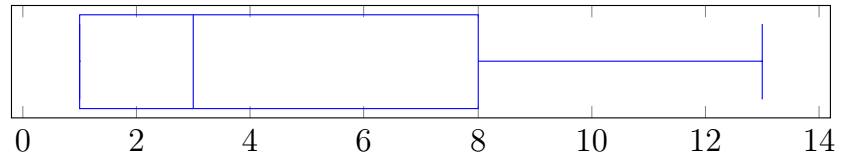
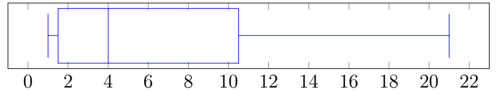
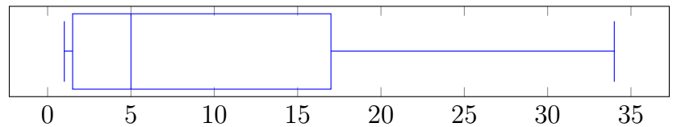
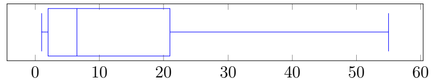
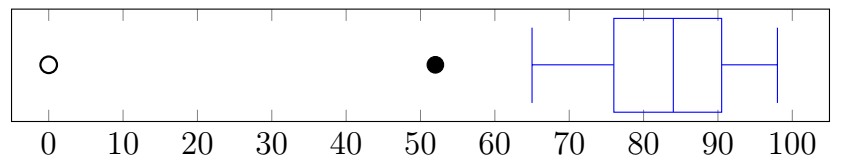

Chapter 5: Measures of Center and Spread
Section 5.5: Five-Number Summary
The Five-Number Summary
Definition: Five-Number Summary
A convenient summary of a distribution is the five-number summary, consisting of
\[\text{Minimum},\;Q_1,\;Q_2,\;Q_3,\;\text{Maximum}.\]For our data set, this summary would be
\[57,\;78.5,\;85,\;90.5,\;98.\]Definition: Interquartile Range (IQR)
Furthermore, we can define the interquartile range (IQR) as a measure of the spread of the middle 50% of the observations.
\[\text{IQR}=Q_3-Q_1.\]For this data set
\[\text{IQR}=90.5-78.5=12.\]Unlike the range, the interquartile range is resistant to unusually small or unusually large observations.
Key Points
- Quantiles divide an ordered data set into equal parts.
- Quartiles divide the data into four parts, deciles into ten parts, and percentiles into one hundred parts.
- The five-number summary consists of the minimum, \(Q_1\), median, \(Q_3\), and maximum.
- The interquartile range is \(\text{IQR}=Q_3-Q_1\).
Box-and-Whisker Plots
Definition: Box-and-Whisker Plot
A box-and-whisker plot (or simply boxplot) provides a graphical summary of a data set using the five-number summary.
A basic boxplot consists of
- a box extending from \(Q_1\) to \(Q_3\),
- a vertical line inside the box at the median,
- whiskers extending from the box to the minimum and maximum observations.
The length of the box represents the interquartile range.
In a basic boxplot, outliers are either not considered or not present. In the modified boxplots used in this chapter, whiskers extend to the smallest and largest observations that are not classified as outliers.
The following examples illustrate how the boxplot changes as observations are added.
Example 1
Construct a boxplot for the first seven Fibonacci numbers:
\[1,\ 1,\ 2,\ 3,\ 5,\ 8,\ 13\]Solution
The minimum value is 1.
The median is the middle value, \(Q_2=3\).
Throwing out the middle value, the median of the lower half \(\{1, 1, 2\}\) is \(Q_1=1\).
Similarly, the median of the upper half \(\{5, 8, 13\}\) is \(Q_3=8\).
The maximum value is 13.
The five-number summary is
\[1,\;1,\;3,\;8,\;13\]Using these numbers, we can build the boxplot:

Example 2
Construct a boxplot for the first eight Fibonacci numbers:
\[1,\ 1,\ 2,\ 3,\ 5,\ 8,\ 13,\ 21\]Solution
The minimum value is 1.
The median is the average of the middle values, \(Q_2=\frac{3+5}{2}=4\).
The median of the lower half \(\{1, 1, 2, 3\}\) is \(Q_1=\frac{1+2}{2}=1.5\).
Similarly, the median of the upper half \(\{5, 8, 13, 21\}\) is \(Q_3=\frac{8+13}{2}=10.5\).
The maximum value is 21.
The five-number summary is
\[1,\;1.5,\;4,\;10.5,\;21\]Using these numbers, we can build the boxplot:

Example 3
Construct a boxplot for the first nine Fibonacci numbers:
\[1,\ 1,\ 2,\ 3,\ 5,\ 8,\ 13,\ 21,\ 34\]Solution
The minimum value is 1.
The median is the middle value, \(Q_2=5\).
The median of the lower half \(\{1, 1, 2, 3\}\) is \(Q_1=\frac{1+2}{2}=1.5\).
The median of the upper half \(\{8, 13, 21, 34\}\) is \(Q_3=\frac{13+21}{2}=17\).
The maximum value is 34.
The five-number summary is
\[1,\;1.5,\;5,\;17,\;34\]Using these numbers, we can build the boxplot:

Example 4
Construct a boxplot for the first ten Fibonacci numbers:
\[1,\ 1,\ 2,\ 3,\ 5,\ 8,\ 13,\ 21,\ 34,\ 55\]Solution
The minimum value is 1.
The median is the average of the middle values, \(Q_2=\frac{5+8}{2}=6.5\).
The middle value of the lower half \(\{1, 1, 2, 3, 5\}\) is \(Q_1=2\).
The middle value of the upper half \(\{8, 13, 21, 34, 55\}\) is \(Q_3=21\).
The maximum value is 55.
The five-number summary is
\[1,\;2,\;6.5,\;21,\;55\]Using these numbers, we can build the boxplot:

These examples illustrate how the quartiles and median can change as observations are added.
Outliers
A boxplot can also be used to identify unusually small or unusually large observations called outliers.
Tukey-Style Fences
Using the interquartile range,
\[\text{IQR}=Q_3-Q_1,\]define the following Tukey-style fences.
\[ \begin{aligned} \text{Lower Inner Fence} &=Q_1-1.5(\text{IQR}),\\ \text{Upper Inner Fence} &=Q_3+1.5(\text{IQR}),\\ \text{Lower Outer Fence} &=Q_1-3(\text{IQR}),\\ \text{Upper Outer Fence} &=Q_3+3(\text{IQR}). \end{aligned} \]Using the Tukey-style 1.5(IQR) and 3(IQR) fences, observations outside the inner fences are commonly classified as mild outliers, while observations outside the outer fences are commonly classified as extreme outliers.
| Observation | Classification |
|---|---|
| Between inner fences | Not an outlier |
| Outside an inner fence | Mild outlier |
| Outside an outer fence | Extreme outlier |
In the notation used in this text, mild outliers are shown as filled circles and extreme outliers as open circles. Other software and textbooks may use different symbols.
When an outlier is present, the whiskers go out to the last non-outlier point, not the fence.
Example 5
Consider the following set of sorted test scores:
\[0,\ 52,\ 65,\ 72,\ 73,\ 74,\ 78,\ 79,\ 80,\ 82,\ 82,\ 84,\ 84,\ 86,\ 87,\ 88,\ 89,\ 89,\ 90,\ 91,\ 92,\ 93,\ 94,\ 95,\ 98.\]Find the fences, identify any outliers, and construct the boxplot.
Solution
The quartiles are
\[Q_1=76,\qquad Q_2=84,\qquad Q_3=90.5,\]so
\[\text{IQR}=90.5-76=14.5.\]The fences are
\[ \begin{aligned} \text{Lower Outer Fence}&=76-3(14.5)=32.5,\\ \text{Lower Inner Fence}&=76-1.5(14.5)=54.25,\\ \text{Upper Inner Fence}&=90.5+1.5(14.5)=112.25,\\ \text{Upper Outer Fence}&=90.5+3(14.5)=134. \end{aligned} \]Since \(0<32.5\), the score of \(0\) is an extreme outlier. Since \(32.5<52<54.25\), the score \(52\) is a mild outlier. All of the remaining observations lie between the inner fences and are therefore not classified as outliers.

Key Points
- Box-and-whisker plots summarize the distribution using the five-number summary.
- Observations beyond \(1.5(\text{IQR})\) from the quartiles are mild outliers and are shown as filled-in circles.
- Observations beyond \(3(\text{IQR})\) from the quartiles are extreme outliers and are shown as open circles.